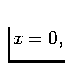
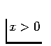

The current version of iGMT is intended for use on UNIX systems4 and was developed running IRIX 6.3-6.5. However, it should be easily modified to run on other hardware platforms without much effort since all the software that iGMT relies on or an equivalent is available for most operating systems. This is especially the case for Macs and PCs whereas we have no experience with the ported programs. 5
The iGMT script package that comes with this documentation, some
example plots and small datasets are available at the iGMT home page
http://www.seismology.harvard.edu/becker/igmt/
These website are also the places to check for updates, bug reports etc. iGMT assumes that you have the following software installed and accessible either via the user's $path variable or the binary paths set in igmt_configure.tcl or the igmt_siteconfig.tcl file (see sec. 4). This software requirement should be automatically fulfilled if you are running a LINUX system from any of the major distribution, e.g. Redhat 7.1. If any of this does not make sense to you, please ask your system administrator.
The Tcl script language and the Tk toolkit (Ousterhout, 1993) are currently available at http://www.tcltk.com/ or http://dev.ajubasolutions.com/. Version 8.0 of Tcl/Tk was used for developing, older versions may work as well. From the newer releases, we found that 8.2.1 gave problems while 8.3 seems to work fine. Tcl is available for UNIX, PC, Mac and other platforms.
iGMT is now set for GMT version 3.4.x by default. If you are running an older version (3., where at the moment  1, 2, 3) change the gmt_version variable in iGMT (see sec. 4). For , you will furthermore have to make sure that the environment $GMTHOME variable is set and accessible by your batch-shell (ksh by default). You can set different binary paths depending on the version of GMT you are running. iGMT switches between them if the user changes GMT versions during runtime.
We have included the option to change the binary directories according to the GMT version that is selected. To modify these optional directories, set the iGMT variables higher_version_gmtbins and lower_version_gmtbins (see sec. 4).
A particular problem that arose for GMT versions larger than 3.0 is the changed Postscript handling. To achieve nice conversions from GMT-Postscript output, the new .gmtdefaults file has to include ``A4+'' as PAPER_MEDIA. iGMT handles this by copying its preferred version of GMT parameter settings into the working directory at the beginning of a session. If the GMT version is then changed during a session, the different .gmtdefaults version of 3.0 and 3.4, say, might confuse the GMT commands and output may fail. It is therefore best to keep the GMT version constant during an iGMT run.
Also see our comments on
http://op.gfz-potsdam.de/igmt/gmt_versions.html.
http://www.wizards.dupont.com/cristy/ImageMagick.html
is used to convert from PS to the GIF format so that GMT output can be judged right away. (iGMT variable ps_to_gif_converter (see sec. 4).)
You might as well use ghostscript to convert from postscript or change the graphic format that is used for previewing to something completely different. 6 iGMT works fine without a converting tool even though you might get an error message when you use ``Map it!''.
If you have installed the tools mentioned above you should be ready to use the basic version of iGMT. While the requirements above might seem complicated, it should be kept in mind that nowadays most UNIX or LINUX systems come with all of the above except GMT when the system software is installed. GMT, on the other hand, is widely in use in the earth sciences already. In addition, all of the software needed to run iGMT is freeware or shareware of some kind and most of it is subjected to an open developing policy.